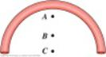

SYSTEMS OF PARTICLES

"If A is success in life, then A equals x plus y plus z.
Work is x; play is y; and z is keeping your mouth
shut.”
Albert
Einstein
–
Observer (1950)

- So far we have implicitly assumed that the moving objects we have been considering can be considered as “point particles”, that is they have no spacial extent (zero dimensions). This means we have not had to worry about things such as rotations and vibrations that occur in real objects. We could imagine we were describing the motion of real objects by assuming that every particle in the object moves in exactly the same way.
- In order to describe more accurately the motion of real objects we must extend our analysis to systems of particles (which is how all real objects may be described) which means we must take into account rotations and vibrations. The first step in this program is to define the centre of mass of such a system.
-
 In
all that
follows we will assume that the
particles that comprise our real object always remain in the
same
position
relative to each other. That is
we do
not allow the object to deform in any way.
Such objects are called rigid
bodies.
In
all that
follows we will assume that the
particles that comprise our real object always remain in the
same
position
relative to each other. That is
we do
not allow the object to deform in any way.
Such objects are called rigid
bodies.
- Centre of Mass:
For particles distributed along the x-axis the x centre of mass is given by,
Similar expressions hold for y and z.
In 3 dimensions the position vector of the centre of mass is given by,
For a real rigid body the particles it is comprised of are atoms, whose mass is extremely small, so that the summation above can be written as an integral (this assumes that mass is continuously distributed throughout the object),
In practice, assuming uniform distribution of mass, we can often locate the centre of mass from the symmetry of the object in question, e.g. disc, rod, cylinder, sphere.
 The
centre of
mass need not lie within the
object in question. For example,
the
centre of mass of the half ring at right is point A, which is
not
inside the
ring.
The
centre of
mass need not lie within the
object in question. For example,
the
centre of mass of the half ring at right is point A, which is
not
inside the
ring.
- Motion of the Centre of Mass
Taking the expression for the centre of mass and differentiating twice we find
where F1 is the force acting on particle 1. Each F
will include contributions due to all the other particles
(internal
forces) and
external contributions. But from
which is

"The
English Winter – ending in July, to recommence in August”
Lord
Byron
– Don Juan (1819-24)

Dr. C. L. Davis
Physics Department
University of
email: c.l.davis@louisville.edu